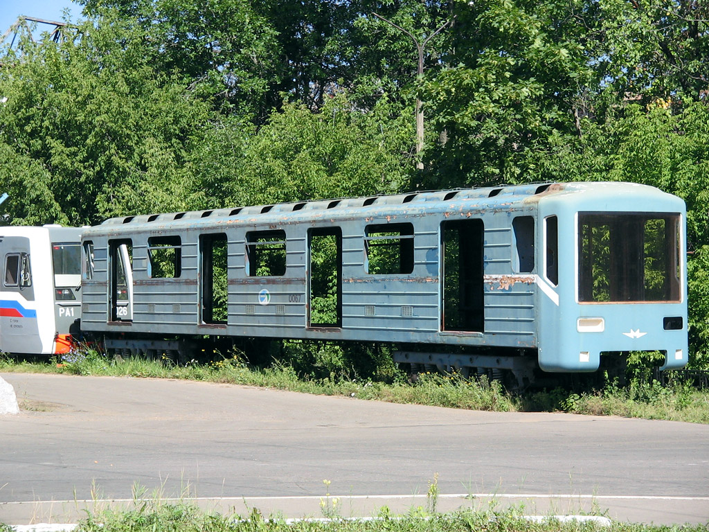

81-717(ММЗ) №0067
Раньше это был обычный номерной, однако потом стал уникальным. Этот вагон стал экспериментальной платформой, на которой отрабатывалась маска кузова для будущего состава 81-717.6К.
История вагона
Постройка
Вагон построен на Мытищинском машиностроительном заводе (ММЗ).
Поступление в метро
Уже в следующем месяце вагон поступил в Московский метрополитен для эксплуатации.
Авария и отправка на завод
После аварии вследствие разрушения шкворневой балки вагон был отправлен на завод "Метровагонмаш".
Экспериментальная маска
Вагон использовался для монтажа экспериментальной маски кузова, став прототипом для состава 81-717.6К.
Утилизация
Вагон был утилизирован на территории завода "Метровагонмаш".
Значение для истории
Отец 81-717.6К
Этот вагон стал прародителем экспериментальной маски кузова, которая позже была использована на опытном составе 81-717.6К (0252-0706-*-0711-0253).
Экспериментальная платформа
Несмотря на аварию, вагон получил вторую жизнь как экспериментальный образец, на котором отрабатывались новые дизайнерские и конструктивные решения.
💡 Важно: Без этого вагона не было бы уникальной маски состава 81-717.6К, который позже стал известен среди энтузиастов.
Связь с составом 81-717.6К
Что дал вагон №0067
- Экспериментальная маска кузова
- Прототип для модернизации
- Тестовая площадка для новых решений
Что получил 81-717.6К
- Уникальная внешность
- Отличительная маска
- Стал одним из самых узнаваемых опытных составов
🚆 Наследие: Опытный состав 81-717.6К (0252-0706-*-0711-0253) появился благодаря этому вагону-экспериментатору.
Технические характеристики
Модель
81-717 (ММЗ)
Номер
0067
Год постройки
Апрель 1986
Завод
Мытищинский машиностроительный завод (ММЗ)
Особенность
Экспериментальная маска кузова
Статус
Утилизирован (07.2010)
Фотогалерея

С экспериментальной маской кузова.

Нажмите на фото для увеличения
«81-717(ММЗ) №0067 — обычный вагон, ставший легендой. После аварии он не отправился в утиль, а стал экспериментальной платформой, на которой родилась маска будущего состава 81-717.6К. Без него не было бы одного из самых узнаваемых опытных поездов Московского метро».